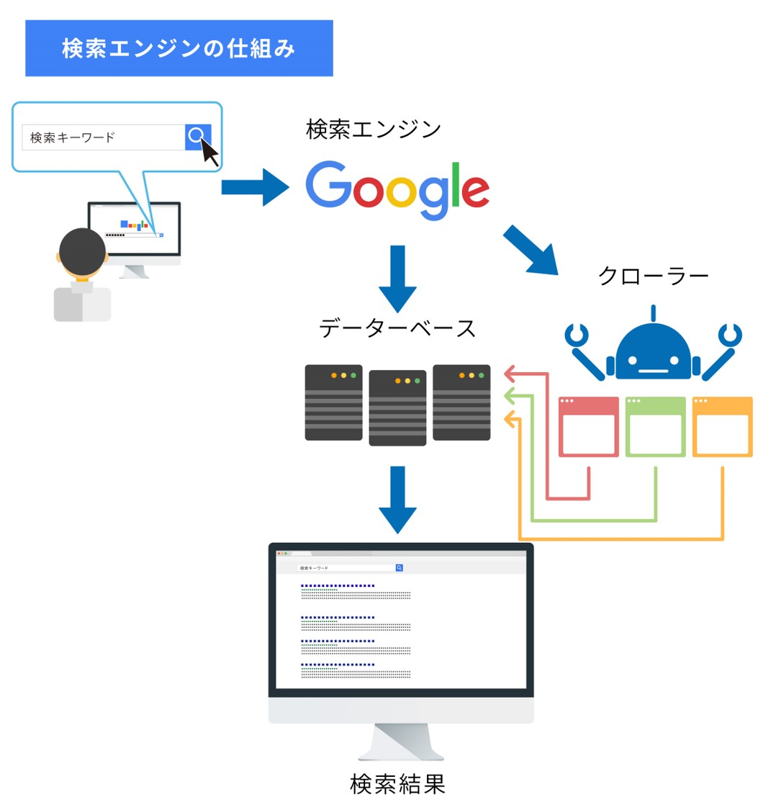
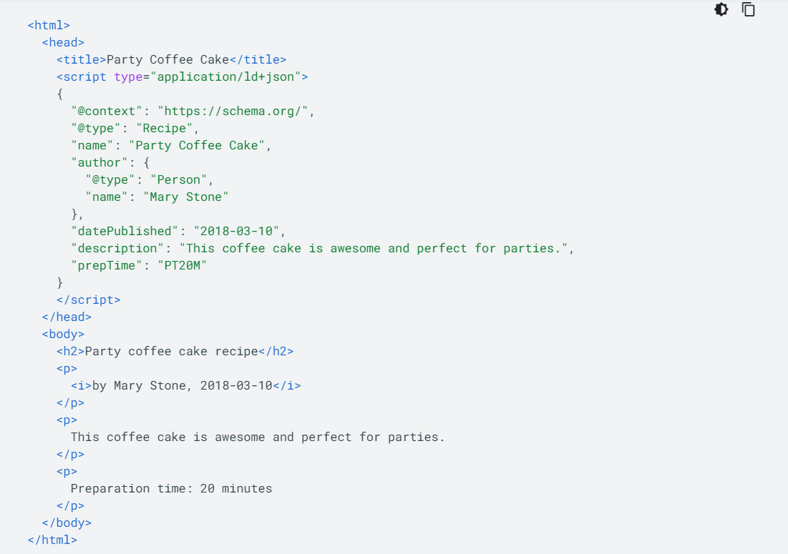

SEO
SEOとはsearch engine optimizerの略であり、その意味は簡単に言うとwebサイトをコンピュータにも理解できるようにするということです。一見これはなぜ必要なのか分からない人も多いと思います。しかし本章を見た後、きっとその考え方も変わるはずです。私たちの作ったコンテンツは正しく世界中の人々に感動を与えるために、webページは、一度クローラーと検索エンジンというプログラムを介してから検索結果に現れます。もしこれらのプログラムを介さなければ、せっかく作ったwebサイトは検索結果に現れず、ネットを彷徨う悲しき遺物となることでしょう。本性はそうならないための対策をメインに取り扱います。
クローラーと検索エンジンについて
SEOについて知るにあたって、私たちの目標を明確にするとクローラーと検索エンジンに対してわかりやすいプログラムを書くことです。そのためにこれらのプログラムについて深く知る必要があります。クローラーの役割は、世界中にあるwebページを巡回し新しい情報はないか確認し各ページのurlと全ての単語をまとめたデータをGoogleのデータセンターに登録することです。この時クローラーはページ上のリンクを辿って他のページの情報を集めるためSEO対策としてリンクについて考えることはとても大事です。リンクについての詳細はこの後すぐに説明します。検索エンジンの役割は、そのデータベースから検索ワードに合わせた適切なwebページをランキング付けして検索結果に羅列することです。このランキングシステムのおかげで私たちは、玉石混交の情報の海から適切なコンテンツを見つけることができる訳です。では適切なコンテンツとは、どのようなものなのでしょう。
価値ある情報共有
検索エンジンが適切なコンテンツと評価する時に、コンテンツの価値が重要になります。ここでインターネットの役割を考えてみると「価値ある情報の共有」が考えられます。これはインターネットが元々は科学者たちの論文を共有する仕組みだったことを考えると、インターネットは元来論文などの価値のある情報をより多くの人に見てもらうためのものであるので、適切なコンテンツとは、価値を持たなければならないことがわかります。しかし価値観の変化した現在では、価値のある情報とは論文のような学術的な内容だけではなく他の要因による価値を生み出すこともあります。そこで以下では、webコンテンツの価値を決定する要因とその対策について説明します。
リンク
リンクは検索エンジンが最も重要視するポイントです。例えば論文では、引用される論文ほど内容の信頼性が高いと評価されるため、論文の価値は引用数で測ることができます。同様にwebサイトの場合もそのサイトへのリンクが多ければ多いほどそのサイトの価値は高いと判断されます。
リンクテキストの効果
リンクテキストとは、リンク内に表示されるテキストです。このテキストはユーザーや Google に対して、リンク先のページについての情報を伝えます。 ページ上のリンクには内部的なリンク（サイト上の他のページを参照しているもの）もあれば、外部的なリンク（他のサイトのコンテンツにつながるもの）もあります。 どちらの場合も、アンカーテキストが効果的であればあるほど、ユーザーはナビゲートしやすくなり、Google はリンク先のページを理解しやすくなります。

適切なアンカーテキストがあれば、ユーザーと検索エンジンはリンクされたページの内容を簡単に把握できます。
効果的なリンクテキストの記述方法
- リンク先のページの内容に関する基本的な情報がわかるアンカーテキストを作成する。
- リンクは短くてわかりやすいテキストにする。
- ユーザーが通常のテキストとリンクのアンカーテキストを簡単に区別できるようにする。（ユーザーがリンクを見逃したり、誤ってリンクをクリックしたりすると、コンテンツの有用性が低くなる）
注意点
リンク先に注意！
他のサイトにリンクすると、自分のサイトに対する評判の一部を別のサイトに与えることになります。ときどき、このことを利用しようとして、別のサイトのコメント欄や掲示板に自分のサイトへのリンクを追加するユーザーがいます。そのため、あるサイトに否定的に言及するとともに、自分のサイトへの評判をそのサイトには与えたくないと考える場合もあるでしょう。たとえば、コメントスパムに関するブログ投稿を執筆し、自分のブログに対して最近コメントスパムを行ったサイトを挙げる場合を想像してください。他の人に警告するため、コンテンツにそのサイトへのリンクを掲載したいけれど、リンクすることで、自分のサイトへの評判をそのサイトに分け与えたくはありません。このような場合は nofollow を使用するのが適切です。
＊ページ上のすべてのリンクに nofollow を適用する場合＊
<!DOCTYPE html> <html> <head> <meta name="robots" content="nofollow"> </head> <body> </body> </html>
このように、ページの<head>タグ内に<meta name="robots" content="nofollow">を追加
構造化データ
そもそも構造化データとは
構造化データとは、検索エンジンがページの内容を適切に認識できるように、検索エンジンにコンテンツを伝えるために サイトのページに追加できるコードです。より分かりやすく言えば、ページ内の内容が何を表しているか（例えば「田中太郎」 という文字は人の名前を表している。）をコンピュータに分かりやすくするためのコードです。
上記にあるように、サイト作成者がどれだけ人間に分かりやすいような見た目、デザインでサイトを作成しようとも、 現在のシステム上、クローラと検索エンジンがその内容を理解することができなければ、あなたの発信したい内容、情報が それを求めている人に届く確率は下がります。以下では、具体的にどうやってコンピュータに内容を適切に伝えていくかを 解説します。
JSON-LD
Googleが現在推奨しているのがJSON-LDというシンタックス（構造化データを記述する書き方や仕様）で、今回はこれを 解説します。
JSON-LDの特徴は、HTMLのpタグなどとは別にscriptタグの中に記述できることです。bodyタグ内に記述した内容が何を意味しているか （メタデータ）を以下のようにして記述します。
基本となる部分を説明します。JSON-LDでは、まず、<script type="application/ld+jdon>という部分でJSON-LDを 使用していることを明記し、記述した後に</script>を記述します。次にJSON-オブジェクトというものを記述しますが、 これは｛｝（波括弧）で囲われた部分を指し、KeyとValueと呼ばれる部分からなります。それぞれを”（ダブルクォーテーション）で 囲み、互いを：（コロン）でつなぎます。Keyはプロパティ（属性、例えばname）を表し、Valueは値（例えば「田中太郎」など）を 表します。このようにして、コンピュータは「田中太郎」がname（名前）であることを理解します。
次に、代表的なKeyをいくつか説明します。@contentという部分は、そのメタデータを解読するときにコンピュータ側が参照する
辞書のようなもので、基本的にはshema.orgを用います。nameは名前であることを示すものです。
詳しくは以下のドキュメントを参照してください。ここを変えたいのにpushできない
https://www.w3.org/TR/json-ld11/
リッチスニペット

スニペットとは左の画像のような検索結果の時点でwebページの内容が少しわかるあれです。
上の方がレビューなどを見れてユーザーの注目を集めやすいということがわかります。このようにスニペットをリッチにすることは、SEO対策にもなり得ます。
コンテンツの属性
人を引きつける有益なコンテンツであることがそのサイト評価の上昇に寄与することは事実ですが、そのような抽象的なアドバイスはあまり役にたちません。しかし検索エンジン内部で「どのような」コンテンツが、どう処理されるかを知ることであなたのコンテンツが様々なルートで見られるのかを知ることはできます。検索エンジンがコンテンツを評価する軸は、次のとおりです。「専門性」、「権威性」、「新鮮か否か」、これらについて少し深掘りすることにしましょう。
専門性と権威性
専門性と権威性がサイトの質を向上させます。サイト内のコンテンツは、そのトピックの専門家が作成または編集するようにしましょう。たとえば、専門知識や豊富な経験を持つ情報発信者が書いた記事であれば、ユーザーは記事の専門性を理解できます。科学的なトピックに関するページでは、できれば十分に確立された総意を示すことが有効です。
検索エンジンは、コンテンツの専門性が高いことを評価します。検索アルゴリズムでそれを客観的に評価するには、リンクで用いられた数を数えるのが一番メジャーなやり方ですが、サイトのコンテンツ自体が正しいことを述べているのか、情報のソースは信頼性があるのか、などもユーザーの満足度に寄与するため検索のランキングに間接的に影響します。
情報の新鮮さ
検索エンジンは、検索キーワードに対して適切なコンテンツを含むサイトを表示するために、検索キーワードによっては、適切なコンテンツを決定する基準が変わります。たとえば、最新のニュース トピックに関するキーワードに回答する場合は、言葉の定義に関するキーワードに回答する場合よりも、コンテンツの鮮度が大きな役割を果たします。
ここで私たちが気をつけるべきなのは、私たちのコンテンツがどのような検索キーワードによって表示されるのかをイメージすることです。今日のサッカーの話題をコンテンツにする場合にその情報ソースの信頼性を高めすぎることは、あまり意味がないということがわかります。なぜならサッカーの勝敗は、新鮮さが重要視されるので、一刻も早く公開することが何よりも重要なのです。
このような様々な指標による情報のランキング付は検索品質評価者が実際に検索品質評価ガイドラインに沿ってチェックしています。内容は英語で少し読みづらいですが興味のある方は読んでみてください。
その他の指標
レスポンシブデザイン
近年ではインターネットを閲覧するデバイスはパソコンよりスマートフォンなどの端末になってきています。そのためレスポンシブデザイン(サイトのデザインがパソコンのものだけでなくスマートフォンにも対応している)のサイトがユーザーにとってもみやすいため検索エンジンはこのようなサイトを評価します。レスポンシブデザインのやり方について詳しくはこちら。
title要素
クローラーはサイト内に含まれる単語を全てをそのサイトのurlと共にデータセンターに保管しますが、その中でもtitleタグの中の要素は非常に重要視します。検索エンジンはtitleタグの要素をサイト全体としてどのようなコンテンツを提供しているのかを意味していると捉えることで、ユーザーの検索キーワードとの関連で重要視します。
コンテンツが表示されるまでの速度
近年のWebサイトはよりユーザビリティを重要視する傾向が強くなりました。それに合わせて検索エンジンもこのようにユーザーを待たせないようなコンテンツを評価します。しかしこればかり意識してしまって淡白なWebサイトになってしまっては本末転倒ですので少し意識する程度にしましょう。